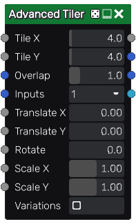

Advanced Tiler node¶
The Advanced Tiler node tiles several instances of its input with optional scale and rotation variations. Overlapping instances are mixed with each other using a lighten filter.
The Advanced Tiler also has a color version whose input is in RGBA format.
While the Tiler nodes has parameters to randomize the result, the Advanced Tiler only randomizes selected images from atlases, and generated color maps if color map inputs are not connected
Inputs¶
The Advanced Tiler node accepts nine inputs:
The Source inputs is the image to be splatted into the output.
The Mask input is a greyscale image that is used as a mask and affects each instance’s value.
The Color map inputs 1 and 2 are RGBA maps used as inputs to generate instance map outputs.
The Translate X and Translate Y input maps are used to offset each instance.
The Rotate input map is used to rotate each instance.
The Scale X and Scale Y input maps are used to scale each instance.
Variations: if checked, the node will tile different variations of its input (i.e. roll a different seed for each instance)
The Remap node can be used to generate input maps (Translate X, Translate Y, Rotate, Scale X and Scale Y) easily. It takes a greyscale image as input and defines the target interval and a step for the output values. For example; using random noise through a Remap node to drive a Rotate input set to 180, you could set it’s Min value to -1, it’s Max value to 1 and it’s Step value to 0.5 and you would get randomly rotated instances snapped to 90 degree intervals.
The HeightToAngle node can be used to easily generate a Rotate map from a heightmap. All instances will be rotated depending on the slope. When using this node to generate the Rotate map, the Rotate parameter must be set to 180.
The HeightToOffset node can be used to easily generate a Translate map from a heightmap. Outputs must be connected to the Translate X and Y inputs of the Tiler node. All instances will be translated depending on the slope, to reach the specified level, and to be accurate, the slopes must be homogeneous. When using this node to generate the Translate map, the Translate X and Translate Y parameters must be set to 1.
Outputs¶
The Advanced Tiler node outputs the splat image, 2 instance color maps.
The greyscale tiler has a fourth output that assigns a UV layout to each tile.
Parameters¶
The Advanced Tiler node accepts the following parameters:
Tile X and Tile Y, the number of columns and rows of of the tile pattern.
Overlap is the number of overlapping instances for each instance.
Inputs is the number of alternate shapes in the input (1, 4 or 16). Images containing several shapes can easily be created using the Tile2x2 node.
The Translate X and Translate Y parameters are used to offset each instance.
The Rotate parameter is used to rotate each instance.
The Scale X and Scale Y parameters are used to scale each instance.
The Translate X, Translate Y, Rotate, Scale X and Scale Y are multiplied with their corresponding input map.
Example images¶